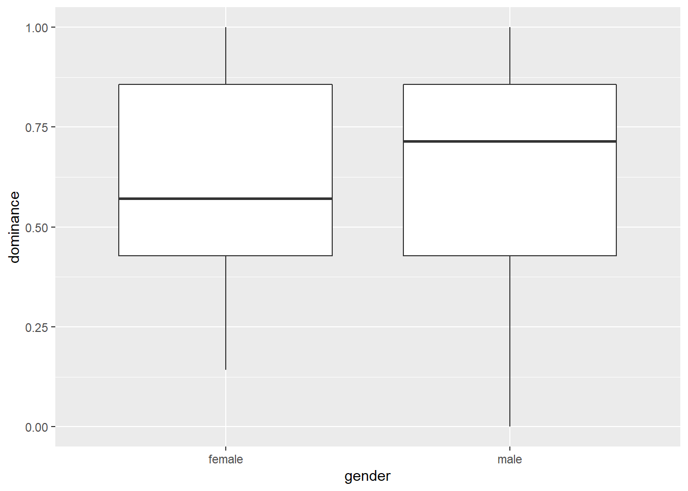

Análise Básica de Dados: Experimentos
Neste capítulo, analisaremos os dados de um experimento que testou se o senso de poder das pessoas afeta sua disposição de pagar (WTP) por produtos relacionados ao status (ou seja, por consumo conspícuo) e se essa relação é diferente quando a WTP desses produtos é visível para os outros versus não.
Os participantes vieram ao nosso laboratório em grupos de oito ou sete. Estavam sentados em frente a um computador em cubículos semi-fechados. Na introdução, os participantes leram que primeiro teriam que preencher um questionário de personalidade e uma pesquisa sobre como eles lidavam com dinheiro. Depois disso, eles teriam que trabalhar juntos em grupos de dois em alguns quebra-cabeças.
A primeira parte da sessão foi um questionário de personalidade avaliando dominância e aspirações de status (Cassidy & Lynn, 1989; Mead & Maner, 2012). Os participantes leram 18 declarações e indicaram se cada uma delas se aplicava a elas ou não. Após o preenchimento deste questionário, os participantes foram lembrados de que, no final da sessão, teriam que trabalhar juntos com outro participante em alguns quebra-cabeças. Cada díade consistiria em um gerente e um trabalhador. Os participantes leram que a atribuição a esses papéis foi baseada em seus resultados no questionário de personalidade, mas, na realidade, a atribuição a papéis foi aleatória.
Os participantes na condição de alta potência então leram que eram mais adequados para serem gerentes, enquanto os participantes na condição de baixa potência liam que eram mais adequados para serem trabalhadores (Galinsky, Gruenfeld e Magee, 2003). As instruções deixaram claro que os gerentes teriam mais poder na tarefa de resolver quebra-cabeças do que os trabalhadores (eles poderiam decidir como um bônus em potencial de 20 euros seria dividido entre gerente e trabalhador). Antes de iniciar os quebra-cabeças, no entanto, os participantes foram convidados a participar de um estudo diferente.
Em um estudo ostensivamente diferente, a disposição dos participantes de gastar em produtos conspícuos e discretos foi medida. Na introdução desta parte do experimento, a presença do público foi manipulada. Na condição privada, os participantes foram informados simplesmente de que estávamos interessados em seus padrões de consumo. Eles foram questionados quanto gastariam em dez produtos que diferiam na medida em que poderiam ser usados para sinalizar o status. Os produtos conspícuos ou aprimoradores de status eram: um carro novo, uma casa, viagens, roupas e um relógio de pulso (para homens) ou jóias (para mulheres). Os produtos discretos ou com status neutro eram produtos de higiene pessoal básicos, medicamentos domésticos, despertador de quarto, utensílios de cozinha e limpeza doméstica (Griskevicius, et al., 2007). Os participantes responderam em uma escala de nove pontos, variando de 1: “Eu compraria itens muito baratos” a 9: “Eu compraria itens muito caros”.
Na condição pública, os participantes foram informados de que estávamos trabalhando em um site onde as pessoas pudessem se encontrar. Este site nos ajudaria a investigar como as pessoas formam impressões entre si com base nos padrões de consumo. Os participantes leram que primeiro teriam que indicar quanto gastariam em alguns produtos. Suas escolhas seriam resumidas em um perfil. Os outros participantes da sessão teriam que formar impressões sobre eles com base nesse perfil. Depois de ver um exemplo da aparência do perfil, os participantes passaram para a mesma medida de consumo da condição privada.
Em suma, o experimento tem um design 2 (poder: alto vs. baixo) x 2 (público: público vs. privado) x 2 (consumo: conspícuo vs. discreto) com poder e audiência manipulados entre os sujeitos e consumo manipulado entre os sujeitos.
As hipóteses neste experimento foram as seguintes:
- Na condição de privado, esperávamos que os participantes de baixa potência tivessem uma WTP maior do que os participantes de alta potência para produtos visíveis, mas não para produtos discretos. Esse padrão de resultados replicaria os resultados de Rucker e Galinsky (2008).
- Esperávamos que a manipulação pública versus privada reduzisse a WTP para produtos visíveis para participantes de baixa potência, mas não para participantes de alta potência.Não esperávamos um efeito da manipulação pública versus privada na WTP para produtos discretos para participantes de baixa ou alta potência.
Este experimento é descrito com mais detalhes em minha tese de doutorado (Franssens, 2016)
Referências
Cassidy, T., & Lynn, R. (1989). A multifactorial approach to achievement motivation: The development of a comprehensive measure. Journal of Occupational Psychology, 62(4), 301-312.
Franssens, S. (2016). Essays in consumer behavior (Doctoral dissertation). KU Leuven, Leuven, Belgium.
Galinsky, A. D., Gruenfeld, D. H., & Magee, J. C. (2003). From Power to action. Journal of Personality and Social Psychology, 85(3), 453-466. https://doi.org/10.1037/0022-3514.85.3.453
Griskevicius, V., Tybur, J. M., Sundie, J. M., Cialdini, R. B., Miller, G. F., & Kenrick, D. T. (2007). Blatant benevolence and conspicuous consumption: When romantic motives elicit strategic costly signals. Journal of Personality and Social Psychology, 93(1), 85-102. https://doi.org/10.1037/0022-3514.93.1.85
Mead, N. L., & Maner, J. K. (2012). On keeping your enemies close: Powerful leaders seek proximity to ingroup power threats. Journal of Personality and Social Psychology, 102(3), 576-591. https://doi.org/10.1037/a0025755
Rucker, D. D., & Galinsky, A. D. (2008). Desire to acquire: Powerlessness and compensatory consumption. Journal of Consumer Research, 35(2), 257-267. https://doi.org/10.1086/588569
Dados
Importação
Faça o download dos dados aqui. Como sempre, salve os dados em um diretório (de preferência um backup automático do software de compartilhamento de arquivos) e inicie seu script carregando o tidyverse e definindo o diretório de trabalho no diretório em que você acabou de salvar seus dados:
#library(tidyverse)
#library(readxl) # precisamos deste pacote pois nossos dados estao num arquivo Excel
#setwd("c:/dropbox/work/teaching/R/") # mudando para o nosso diretorio de trabalho
#powercc <- read_excel("power_conspicuous_consumption.xlsx","data") # Importe o arquivo Excel. Perceba que o nome da aba do Excel eh datalibrary(readxl)
url<-"http://users.telenet.be/samuelfranssens/tutorial_data/power_conspicuous_consumption.xlsx"
powercc <- tempfile()
download.file(url, powercc, mode="wb")
powercc<-read_excel(path = powercc, sheet = 1)
powercc## # A tibble: 147 x 39
## subject start_date end_date duration finished power
## <dbl> <dttm> <dttm> <dbl> <dbl> <chr>
## 1 1 2012-04-19 09:32:56 2012-04-19 09:49:42 1006. 1 high
## 2 2 2012-04-19 09:31:26 2012-04-19 09:51:13 1187. 1 low
## 3 3 2012-04-19 09:29:50 2012-04-19 09:53:10 1400. 1 low
## 4 4 2012-04-19 09:26:25 2012-04-19 09:53:21 1616. 1 low
## 5 5 2012-04-19 09:20:55 2012-04-19 09:54:21 2006. 1 high
## 6 6 2012-04-19 09:28:02 2012-04-19 09:55:50 1668. 1 high
## 7 7 2012-04-19 09:17:54 2012-04-19 09:58:49 2455. 1 low
## 8 8 2012-04-19 09:22:26 2012-04-19 10:01:40 2354. 1 high
## 9 9 2012-04-19 10:13:12 2012-04-19 10:31:03 1071. 1 low
## 10 10 2012-04-19 10:12:55 2012-04-19 10:31:29 1114. 1 high
## # ... with 137 more rows, and 33 more variables: audience <chr>,
## # group_size <dbl>, gender <chr>, age <dbl>, dominance1 <dbl>,
## # dominance2 <dbl>, dominance3 <dbl>, dominance4 <dbl>, dominance5 <dbl>,
## # dominance6 <dbl>, dominance7 <dbl>, sa1 <dbl>, sa2 <dbl>, sa3 <dbl>,
## # sa4 <dbl>, sa5 <dbl>, sa6 <dbl>, sa7 <dbl>, sa8 <dbl>, sa9 <dbl>,
## # sa10 <dbl>, sa11 <dbl>, inconspicuous1 <dbl>, inconspicuous2 <dbl>,
## # inconspicuous3 <dbl>, inconspicuous4 <dbl>, inconspicuous5 <dbl>,
## # conspicuous1 <dbl>, conspicuous2 <dbl>, conspicuous3 <dbl>,
## # conspicuous4 <dbl>, conspicuous5 <dbl>, agree <dbl>Não se esqueça de salvar seu script no diretório de trabalho.
Manipulação
Temos 39 colunas ou variáveis em nossos dados:
- subject identifica os participantes
- start_date e end_date indicam o início e o fim da sessão experimental.
- duration indica a duração da sessão experimental
- finished: os participantes concluíram todo o experimento?
- power (alto vs. baixo) e público (privado vs. público) são as condições experimentais
- group_size: em grupos de quantos participantes compareceram ao laboratório?
- gender e age do participante
- dominance1, dominance2, etc. são as perguntas que mediram a dominância. Um exemplo é “Eu acho que gostaria de ter autoridade sobre outras pessoas”. Os participantes responderam com sim (1) ou não (0).
- sa1, sa2 etc. são as perguntas que medem as aspirações de status. Um exemplo é: “Gostaria de um trabalho importante, onde as pessoas me admirassem”. Os participantes responderam com sim (1) ou não (0).
- inconspicuous1, inconspicuous2, etc. contêm a WTP para os produtos inconspicuous. Escala de 1: eu compraria itens muito baratos a 9: eu compraria itens muito caros.
- conspicuous1, conspicuous2, etc. contêm a WTP para os produtos conspícuos. Escala de 1: eu compraria itens muito baratos a 9: eu compraria itens muito caros.
- agree: uma questão exploratória que mede se as pessoas concordam que elas são mais adequadas ao papel de trabalhador ou gerente. Os participantes responderam em uma escala de 1: muito mais adequado para a função de trabalhador (gerente) a 7: muito mais adequado para a função de gerente (trabalhador). Números mais altos indicam concordância com a atribuição de função no experimento.
Fatorar algumas variáveis
Após a inspeção dos dados, vemos que o tipo de subject é duplo, o que significa que o subject deve ser fatorado para que seus valores não sejam tratados como números. Também fatoraremos nossas condições experimentais:
##
## Attaching package: 'dplyr'## The following objects are masked from 'package:stats':
##
## filter, lag## The following objects are masked from 'package:base':
##
## intersect, setdiff, setequal, unionpowercc <- powercc %>% # nos criamos o objeto powercc anteriormente
mutate(subject = factor(subject),
power = factor(power, levels = c("low","high")), # note os niveis dos argumentos
audience = factor(audience, levels = c("private","public"))) # note os niveis dos argumentosObserve que fornecemos novos de argumento ao fatorar poder e público. Este argumento especifica a ordem dos de um fator. No contexto desse experimento, é mais natural falar sobre o efeito da alta versus baixa potência no consumo do que falar sobre o efeito da baixa versus alta potência no consumo. Portanto, dizemos ao que o baixo nível de energia deve ser considerado como o primeiro nível. Mais adiante, veremos que o resultado das análises pode ser interpretado como efeitos de alta potência (segundo nível) vs. baixa potência (primeiro nível). O mesmo raciocínio se aplica ao fator público, embora não seja necessário fornecer os níveis para esse fator porque o privado vem antes do público em ordem alfabética. Sua escolha do nível para o primeiro ou nível de referência influencia apenas a interpretação, não o resultado real da análise.
Em uma sessão experimental, o alarme de incêndio disparou e tivemos que sair do laboratório. Vamos remover os participantes que não concluíram a experiência:
powercc <- powercc %>% # nos ja criamos o objeto powercc anteriormente
filter(finished == 1) # somente mantenha as observacoes que sao terminadas ou iguais a 1Observe o dobro \(==\) ao testar a igualdade. Confira o livro R4 Data Science para outros operadores lógicos (role para baixo para chegar à Seção 5.2.2).
Calcular a consistência interna e a média de perguntas que medem o mesmo conceito
Gostaríamos de calcular a média das perguntas que medem a dominância para obter um único número indicando se o participante tem uma personalidade dominante ou não dominante. Antes de fazer isso, devemos ter uma idéia da consistência interna das perguntas que medem o domínio. Isso nos dirá se todas essas perguntas medem o mesmo conceito. Uma medida da consistência interna é o alfa de Cronbach. Para calcular, precisamos de um pacote chamado psych:
Depois que o pacote for carregado, podemos usar a função alfa para calcular o alfa de Cronbach para um conjunto de perguntas:
dominance.questions <- powercc %>%
select(starts_with("dominance")) # pegue o dataframe powercc e selecione todas as viariaveis com o nome que se inicia com dominancia
alpha(dominance.questions) # calcula o alfa de cronbach para essas variaveis##
## Reliability analysis
## Call: alpha(x = dominance.questions)
##
## raw_alpha std.alpha G6(smc) average_r S/N ase mean sd median_r
## 0.69 0.67 0.67 0.23 2.1 0.038 0.63 0.27 0.21
##
## lower alpha upper 95% confidence boundaries
## 0.61 0.69 0.76
##
## Reliability if an item is dropped:
## raw_alpha std.alpha G6(smc) average_r S/N alpha se var.r med.r
## dominance1 0.68 0.67 0.66 0.25 2.0 0.039 0.016 0.22
## dominance2 0.65 0.63 0.62 0.22 1.7 0.043 0.018 0.21
## dominance3 0.59 0.58 0.56 0.19 1.4 0.050 0.014 0.20
## dominance4 0.62 0.60 0.59 0.20 1.5 0.047 0.018 0.21
## dominance5 0.65 0.64 0.63 0.23 1.7 0.043 0.021 0.21
## dominance6 0.70 0.70 0.68 0.28 2.4 0.038 0.009 0.25
## dominance7 0.65 0.64 0.62 0.23 1.8 0.043 0.017 0.20
##
## Item statistics
## n raw.r std.r r.cor r.drop mean sd
## dominance1 143 0.52 0.49 0.33 0.29 0.53 0.50
## dominance2 143 0.59 0.61 0.52 0.42 0.80 0.40
## dominance3 143 0.75 0.74 0.71 0.59 0.52 0.50
## dominance4 143 0.68 0.68 0.61 0.50 0.58 0.50
## dominance5 143 0.61 0.59 0.48 0.40 0.55 0.50
## dominance6 143 0.29 0.38 0.19 0.14 0.91 0.29
## dominance7 143 0.62 0.59 0.48 0.41 0.53 0.50
##
## Non missing response frequency for each item
## 0 1 miss
## dominance1 0.47 0.53 0
## dominance2 0.20 0.80 0
## dominance3 0.48 0.52 0
## dominance4 0.42 0.58 0
## dominance5 0.45 0.55 0
## dominance6 0.09 0.91 0
## dominance7 0.47 0.53 0# Observe que também poderíamos ter escrito isso da seguinte maneira:
# powercc %>% select(starts_with("dominance")) %>% cronbach()Isso produz muita saída. Em raw_alpha, vemos que o alfa é 0,69, que fica no lado inferior (0,70 é geralmente considerado o mínimo necessário), mas ainda está ok. A tabela abaixo nos diz qual seria o alfa se retirássemos uma pergunta de nossa medida. A queda da dominance6 aumentaria o alfa para 0,7. Comparado ao alfa original de 0,69, esse aumento é pequeno e, portanto, não perdemos a dominance6. Se houvesse uma pergunta com um alto “alfa se descartado”, isso indicaria que esta pergunta está medindo algo diferente das outras perguntas. Nesse caso, você pode considerar remover esta pergunta da sua medida.
Podemos proceder calculando a média das respostas sobre a questão do domínio:
powercc <- powercc %>%
mutate(dominance = (dominance1+dominance2+dominance3+dominance4+dominance5+dominance6+dominance7)/7,
cc = (conspicuous1+conspicuous2+conspicuous3+conspicuous4+conspicuous5)/5,
icc = (inconspicuous1+inconspicuous2+inconspicuous3+inconspicuous4+inconspicuous5)/5) %>%
select(-starts_with("sa"))Também calculei a média das perguntas sobre consumo conspícuo e consumo discreto, mas não sobre as aspirações de status porque o alfa de Cronbach era muito baixo. Excluí as perguntas sobre aspirações de status do conjunto de dados. Deixo como um exercício verificar os alfa de Cronbach de cada um desses conceitos (faça isso antes de excluir as perguntas sobre as aspirações de status, é claro).
Recapitulando: importando e manipulando
Aqui está o que fizemos até agora, em uma sequência ordenada de operações canalizadas (faça o ):
#library(tidyverse)
#library(readxl)
#setwd("c:/dropbox/work/teaching/R/") # mudando para seu proprio diretorio
#powercc <- read_excel("power_conspicuous_consumption.xlsx","data") %>%
# filter(finished == 1) %>%
#mutate(subject = factor(subject),
# power = factor(power, levels = c("low","high")),
# audience = factor(audience, levels = c("private","public")),
# dominance = (dominance1+dominance2+dominance3+dominance4+dominance5+dominance6+dominance7)/7,
# cc = (conspicuous1+conspicuous2+conspicuous3+conspicuous4+conspicuous5)/5,
# icc = (inconspicuous1+inconspicuous2+inconspicuous3+inconspicuous4+inconspicuous5)/5) %>%
# select(-starts_with("sa"))Teste \(t\)
Teste \(t\) para amostras independentes
Digamos que queremos testar se homens e mulheres diferem no grau em que são dominantes. Vamos criar um boxplot primeiro e depois verificar as médias e os desvios padrão:
##
## Attaching package: 'ggplot2'## The following objects are masked from 'package:psych':
##
## %+%, alpha
powercc %>%
group_by(gender) %>%
summarize(mean_dominance = mean(dominance),
sd_dominance = sd(dominance))## `summarise()` ungrouping output (override with `.groups` argument)## # A tibble: 2 x 3
## gender mean_dominance sd_dominance
## <chr> <dbl> <dbl>
## 1 female 0.614 0.247
## 2 male 0.646 0.296Os homens pontuam um pouco mais alto que as mulheres, mas queremos saber se essa diferença é significativa. Um teste \(t\) de amostras independentes pode fornecer a resposta (os homens e as mulheres em nosso experimento são amostras independentes), mas precisamos verificar primeiro uma suposição: as variações das duas amostras independentes são iguais?
#install.packages("car") # para o teste de variancias iguais, precisamos de um pacote chamado car
library(car)## Loading required package: carData##
## Attaching package: 'car'## The following object is masked from 'package:psych':
##
## logit## The following object is masked from 'package:dplyr':
##
## recode# Teste Levene para igualdade de variancias.
# Baixo valor-p indica que as variancias nao sejam iguais.
# Primeiro argumento = variavel dependente continua, segundo argumento = variavel independente categorica
leveneTest(powercc$dominance, powercc$gender) ## Warning in leveneTest.default(powercc$dominance, powercc$gender): powercc$gender
## coerced to factor.## Levene's Test for Homogeneity of Variance (center = median)
## Df F value Pr(>F)
## group 1 2.1915 0.141
## 141A hipótese nula de variâncias iguais não é rejeitada (\(p = 0,14\)), para que possamos continuar com um teste \(t\) que assume variâncias iguais:
# Teste se os meios de dominancia diferem entre os sexos.
# Indique se o teste deve assumir variacoes iguais ou nao (define var.equal = FALSE para um teste que nao assume variacoes iguais).
t.test(powercc$dominance ~ powercc$gender, var.equal = TRUE) ##
## Two Sample t-test
##
## data: powercc$dominance by powercc$gender
## t = -0.6899, df = 141, p-value = 0.4914
## alternative hypothesis: true difference in means is not equal to 0
## 95 percent confidence interval:
## -0.12179092 0.05877722
## sample estimates:
## mean in group female mean in group male
## 0.6142857 0.6457926Você pode relatar o seguinte: “Homens (\(M = 0,65, DP = 0,3\)) e mulheres (\(M = 0,61, DP = 0,25\)) não diferiram no grau em que se classificaram como dominantes (\(t (141) = -0,69 , p = 0,49\)).”
Teste \(t\) para amostras dependentes
Digamos que queremos testar se as pessoas estão mais dispostas a gastar em itens conspícuos do que em itens discretos. Vamos verificar os meios e os desvios padrão primeiro:
powercc %>% # nao ha necessidade de agrupar! nao estamos dividindo nossa amostra em subgrupos
summarize(mean_cc = mean(cc), sd_cc = sd(cc),
mean_icc = mean(icc), sd_icc = sd(icc))## # A tibble: 1 x 4
## mean_cc sd_cc mean_icc sd_icc
## <dbl> <dbl> <dbl> <dbl>
## 1 6.01 1.05 3.60 0.988As médias são mais altas para produtos conspícuos do que para produtos discretos, mas queremos saber se essa diferença é significativa e, portanto, realizar um teste t de amostras dependentes (cada participante classifica produtos conspícuos e discretos, portanto, essas classificações são dependentes):
t.test(powercc$cc, powercc$icc, paired = TRUE) # Teste se as medias de cc e icc sao diferentes. Indique que este eh um teste t de amostras dependentes com emparelhado = TRUE.##
## Paired t-test
##
## data: powercc$cc and powercc$icc
## t = 25.064, df = 142, p-value < 2.2e-16
## alternative hypothesis: true difference in means is not equal to 0
## 95 percent confidence interval:
## 2.214575 2.593816
## sample estimates:
## mean of the differences
## 2.404196